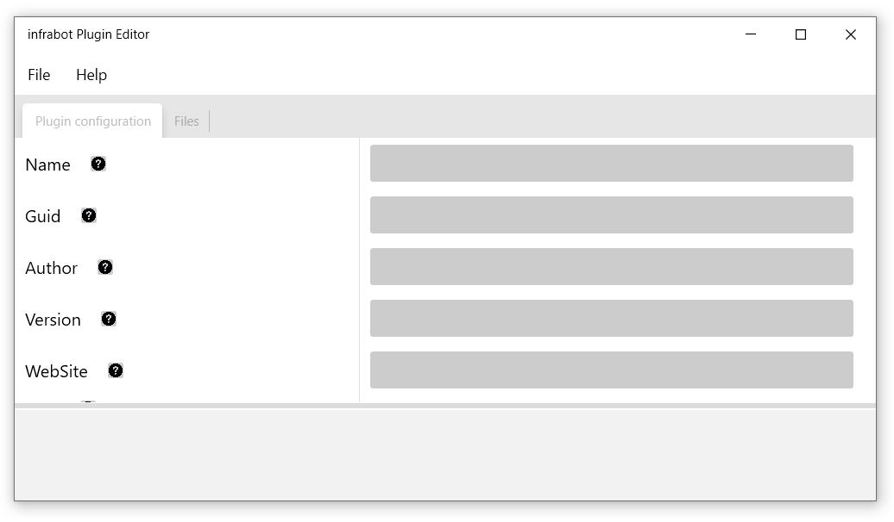

Documentation for infrabot
Plugin Editor is a tool which can help you to create or modify plugins.
Plugin editor has two main tabs:
Plugin configuration tab contains main plugin settings. Decription of each setting is shown below in table.
| Parameter | Type | Description |
|---|---|---|
| Name | String | This parameter specifies plugin Name. |
| Guid | String | This parameter specifies plugin`s unique GUID. This is a read-only parameter. GUID is generated once during plugin creation. |
| Author | String | This parameter specifies plugin`s Author name. |
| Version | String | This parameter specifies plugin`s Version. |
| WebSite | String | This parameter specifies author`s WebSite URL. |
| Help | String | This parameter specifies detailed plugin information with usage examples. Value of
this field will be returned to user if ? specfiied after command.
Example: /your_command ?
|
| Help short | String | This parameter specifies short plugin description. Value of
this field will be returned to user when user sends /getcommands
commandlet to
bot. Also value of this field is shown in chat main menu. |
| Execution command | String | This parameter specifies exact execution command to which bot should react. Value of
this field is NOT case sensitive. It is mandatory to begin all commands
with / character.Example: /restartserver |
| Execute file | String | This parameter specifies file to execute. Since all files of the plugin wil be
extracted to
%infrabot_installation_directory%/plugins/%plugin_guid_number%
directory, this folder will be considered as root folder for the plugin and path to
executable file must be specified relatively.
Example: RestartServer.ps1Example: scripts\RestartServer.ps1Example: bin\nodejs.exe
|
| Default error message | String | This parameter specifies default error for command if none of the answer result
checks matches or script (or application) execution fails. {DATA} -
will be replaced with all arguments which have been sent to
command. {RESULT} - will be replaced with output received from your
script or executable.
Example: Server with name "{DATA}" was not restarted! Error is : {RESULT}!
|
| Execute type | Option | This parameter specifies how to execute this plugin. It can be either PowerShell
script or Custom executable application. Based on this value infrabot will determine how
to execute file specified in Execute file field. |
| Execute results | Array list | This parameter specifies how to check result returned from script or executable. If
Execute results list is empty, then all output will be returned to chat
without any checks.
|
Execute results are required if there is a necessity to return specific answers based on the execution result output (example 1). In order to achieve execution result checks, various check types have been implemented.
| Parameter | Option | Description |
|---|---|---|
| Check type (If result) | String |
This parameter specifies how to check output with the Value. Check types are:
|
| Value | String | This parameter specifies exact value to check with the execution output. |
| Output | String | This parameter specifies output to return to chat if check is succeded.
{DATA} - specified in this string will be replaced with all arguments
which have been sent to command. {RESULT} - will be replaced with
output received from your script or executable.
|
If we want just show all output to the chat without any checks, then all items in the Execute results window must be cleaned (example 2). Sending arguments to commandlet will still be possible. Logic of using of those arguments should be implemented in the script or application itself.
NOTE: After setting value for each parameter save () button must be pressed. Selected execute result does not automatically save on switch.
When the plugin is newly created temporary folder will be created in
%current_user_temp_folder%\%plugin_guid% folder where %plugin_guid% is
a GUID of the plugin. To add files into the plugin, all files must be copied to this directory.
To open folder press button.
When an existing plugin is opened for modification, a temporary folder will be created, with full data extraction there. To add (or remove) files into the plugin press the button on Files tab. When you save the plugin all data in the temporary folder will be added into the plugin. Note that all directory structure will remain as intended.